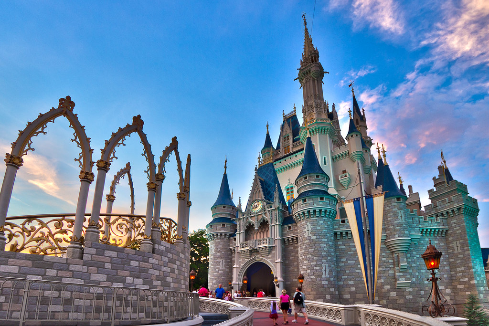

Things to Do
Orlando is known for its abundance of tourist activities. Between the theme parks, resorts, shopping centers, sports complexes, historical landmarks, and other miscellaneous attractions, the city will keep you plenty entertained. Here is a list of some of the top things to do in Orlando:
Walt Disney World
The centerpieces of Walt Disney World are the four theme parks: The Magic Kingdom, Epcot, Disney's Hollywood Studios, and Disney's Animal Kingdom. Walt Disney World also has two of the world's three most popular water parks, Typhoon Lagoon and Blizzard Beach, both heavily themed. Two shopping and entertainment districts, Downtown Disney and Disney's Boardwalk, provide extensive shopping, dining, and entertainment options. If none of that strikes your fancy, check out some of the lesser-known activities: golf, tennis, boating, race car driving, spas and health clubs, backstage tours, sporting events, character dining, and much more [2].
Universal Orlando Resort
Universal Orlando consists of two theme parks (Universal Studios Florida and Universal's Islands of Adventure), an on-site waterpark (Volcano Bay), an on-site entertainment district (Universal CityWalk), eight Loews Hotels (Loews Portofino Bay Hotel, Hard Rock Hotel, Loews Royal Pacific Resort, Cabana Bay Beach Resort, Loews Sapphire Falls Resort, Universal's Aventura Hotel, Endless Summer Dockside Inn and Suites and Surfside Inn and Suites), and it will soon add a new theme park (Epic Universe) with an accompanying hotel [3].
SeaWorld Orlando
In 2018, SeaWorld Orlando hosted an estimated 4.594 million guests, ranking it the 10th most visited amusement park in the United States [4].
Andretti Indoor Karting & Games
Race with a legend at Andretti Indoor Karting & Games, the only indoor karting experience endorsed by Mario Andretti! Adjacent to International Drive and the Orange County Convention Center, this 150,000-square-foot facility features multi-level indoor karting, 12 lanes of boutique bowling, more than 120 arcade and prize games, two-story laser tag, six virtual-reality racing simulators, a motion theater, and an extreme ropes course with a curved-rail zipline, as well as a full-service restaurant and bars [5].
Crayola Experience
Enjoy a full day of creative play and colorful fun with more than two dozen hands-on activities at the family-friendly Crayola Experience, located at The Florida Mall®. Covering two stories and 70,000 square feet, Crayola Experience invites you to name and wrap your own Crayola crayon, and learn how crayons are made in a fun live show. You can also sculpt colorful creations at the Crayola Model Magic compound, watch as your digital art comes to life on a huge interactive wall, and melt crayons down into shapes [5].